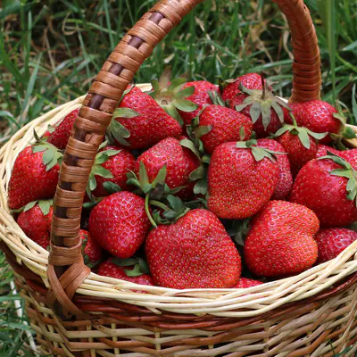
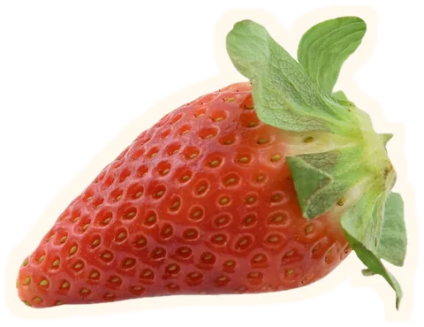
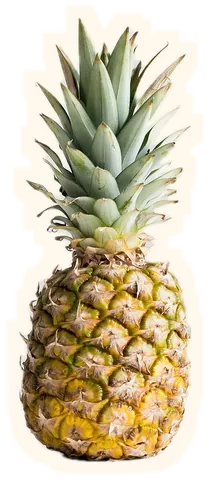
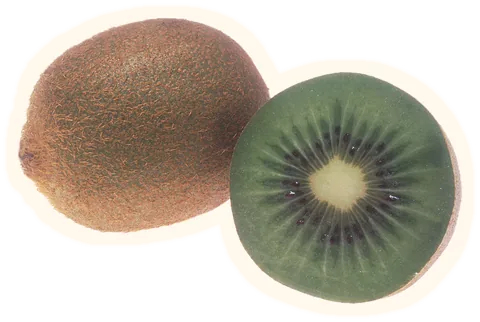
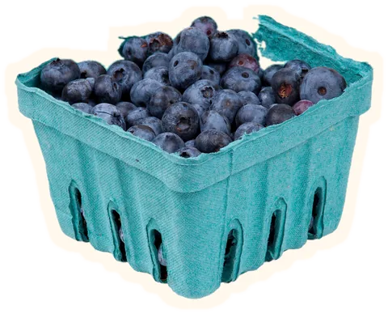
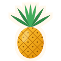
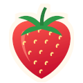
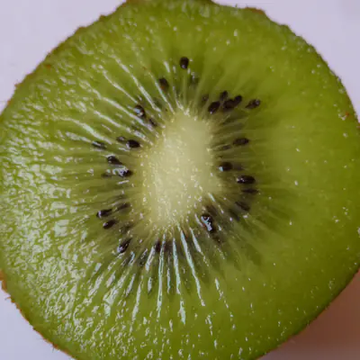
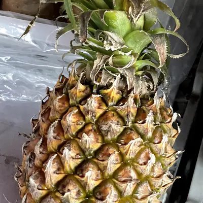
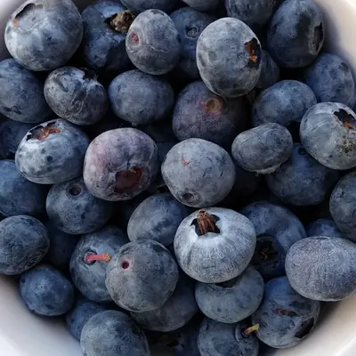

Strawberries
Each seed on the skin is a fruit of its own.

A demo landing page with four fruits. Its colors follow the hour on the citrus clock.



It keeps your time until you drag the hand or tap the slice. On a keyboard, Tab to the slice: the arrow keys move 15 minutes, Page Up and Page Down an hour.
Kiwi,

pineapple,
strawberries and blueberries, around the clock.
Each seed on the skin is a fruit of its own.

Weight for weight, more vitamin C than an orange.

A plant grows one fruit at a time, and each one takes over a year.

The pale blue is a coat of wax. Rub it off and the berry is almost black.
Size and load time of each file, measured by your browser on this visit.
Opens the repository on GitHub. MIT license.